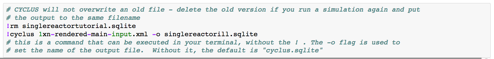

Working with Cyclus in on your machine¶
Choosing Where to Run¶
Cyclus can be used to run simulations on your local machine, if you have Cyclus installed, or in an appropriately configured cloud resource. The advantage of using a local machine is that you can control which archetypes are available. The advantage of using a remote machine is that you don’t have to install the entire Cyclus toolset on your local machine.
For this tutorial, Cyclus has been installed natively so it can be run from either the IPython notebook or in the command prompt:
Brief Introduction to Jupyter Notebook¶
A user can input the code required to run the simulation and analyze its output in one Jupyter Notebook with clear descriptions.
A tutorial on how to get Jupyter Notebook set up on your computer is available here
A Jupyter notebook has four main areas:
A Run button that runs the cell you’re in
A Up and Down buttons that move you up or down a cell
A vertical blue line that shows what cell you’re currently in
A Stop button that stops running the cell you’re in

Jupyter Notebook Scenario Execution¶
Go to the Jupyter notebook, making sure you are in the same folder as the input file
Remove any old Cyclus output files by:
!rm tutorial.sqliteRun Cyclus by:
!cyclus input.xml -o tutorial_singlerx.sqlite
When your simulation has finished, a file of the name tutorial_singlerx.sqlite
will be in your file folder. Your Jupyter Notebook can then be used with
Cymetric to analyze your
data. Examples of how to use Cymetric can be found in the GitHub.
Backup: Files for Success¶
If your run did not succeed, you can retrieve correct input and output files here under input_oncethrough.xml
or ouput_oncethrough.sqlite. This link contains input and
output files for each of the examples in this tutorial.